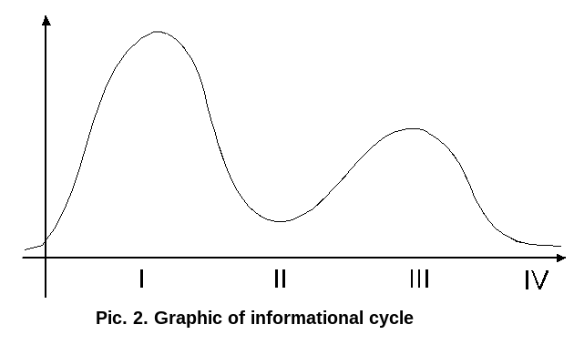

The Structure and Elements of Socionics Model A by Victor Gulenko¶
Published by Victor Gulenko in Socionics, Mentology, and Personality Psychology, 1998, № 4, pp. 73-80.
1. General Characteristics¶
The general structure of the Socionics model is known from the work of A. Augustinavichiute [1,2]. It is represented by two rings located one above the other, each formed from 4 different elements of information metabolism. In this article we will mainly be interested in these basic components of model A, which adequate consideration was never given until now.
The horizontal levels of the model, as is known, are called blocks and house the functions: the first of which is information entrance, whereas the second is related to information output at its level. These blocks have the following names (going from top to bottom) ego, superego, super-id and id. They are analogous to the components of the human psyche elaborated on by Sigmund Freud [3]. The only difference is the fact that Sigmund Freud never examined the super-id block, which is the antipode of the superego. The introduction of this block by A. Augustinavichiute depended upon the need for considering the component within the structure of personality, which reflects the demands of personality within the sphere of society. The relationship between superego and super-id is the same as that between ego and id, i.e. diametrical opposition.
The socionics model describes the functioning of the psyche of man as a double process. One outline of information processing is completely conscious, i.e. it is wholly subordinated to goal-directed control by consciousness. This is the mental ring of functions.
The secondary circuit of the information yields much less to conscious control, it is connected to the daily physiological needs of the individual and the organism, it functions almost mechanically, without a moment’s hesitation. This is the ring of vital functions.
There is a specific connection between the flow of mental and vital processes. Any new, previously absolutely unknown piece of information begins in - and is processed only by - the mental ring, since its rate of processing is much lower than the vital. Due to this mechanism of perception, information is structured more differentially, yields to verbal descriptions by means of language. To a sufficient degree, realized processes, i.e. information, which has repeatedly undergone processing through the mental cycle, can be processed further with much quicker speed without the necessity of strong conscious control or mechanically repeating what’s already known and thought out. Therefore known information, which is past mental processing, is passed to the vital ring and circulates there till its complete exhaustion.
Thus, the mental ring is in charge of the personality’s overall strategy, and the vital ring takes over the daily performance, i.e. it deals with tactical questions. The sphere of the activity of personality proves to be delineated along a radius. On distant communicative distances, when man associates with society or with strange and new people, the mental ring - the nucleus of personality - prevails. Upon close communicative distances the nucleus of personality is presented with difficulty. Into the action enters the vital ring, the outer shell through which energy-information exchange is accomplished with close, familiar people.
In our opinion, the four units of the socionics model answer to the four levels of the manifestation of human personality, namely: Id - corresponds to the physical level (128 physiotypes), super-id - to the psychological level (64 psycho-types), superego - to the social level (32 sociotypes), and finally ego - to the information level (16 infotypes). This question is examined in more detail in our work “Quantity of Types in Socioanalysis.”
In order to give these layers of the psyche a picturesque and detailed description, we propose to appropriate a linguistic modality. Language as the product of the psyche distributes all of the subject’s attitudes towards actions and events in the external world as follows:
Ego or information level – “I know”
Superego or social level - “I must”
Super-id or psychological level - “I want”
Id or physical level - “I can”
Let us also note that “I know” and “I can” are opposite modalities, as are “I must” and “I want.”
“I know” comprehends the surrounding world, adding newly discovered regularities to itself (alt. adding to newly discovered regularities from itself), while “I can” acts on the world physically, being oriented towards daily needs through the system of reflexes and others, it’s polished automatic reactions interacting to influence the nearest medium.
These instances of the psyche exist one due to the other. The cognitive aspirations of our psyche are limited physically as far as the possibilities of the organism.
The same is possible to say with respect to the contrast between “I must” and “I want.” “Necessary” is an expression of the demands of society which restricts the behavior of people, which live within it. If a man does not observe these standards, then to one degree or another suffer the interests of other people, which belong to the same society. Pangs of conscience are a consequence of these unaccountable actions of the individual.
“I want” to, on the contrary, is an expression of the demands of a person in the sphere of his surrounding society. If the surrounding people do not correspond to these requirements, a person is inclined to charge them on the grounds that they are not “such as he desires,” to give them a negative value in his mind. This accusatory bias, if it is strongly represented in a person’s character, could be named “dishonesty,” if this word did not bear a distinctly negative connotation. Therefore it is possible to recommend as a descriptor for this layer of the psyche, the unwillingness to consider other people, the known term “anti-conscience.”
The examinations of the discrete levels of the psyche is not yet sufficient for constructing the finalized socionics model. For this it is necessary to indicate the motion of information within it. Moreover in this part we must distinguish the direction of the motion of information in each ring on the one hand; and on the other hand, the passage of information traffic from one ring to another.
How are we to proceed? In principle, there are two possible directions for the motion of information: clockwise and counterclockwise. If we accept the thesis that information processes in the psyche are subordinate to the same laws as the nervous system, this from our point of view being the case, then the clockwise flow of information should be considered analogous to the process of excitation, according to I. P. Pavlov, and the counterclockwise flow of information analogous to the process of inhibition [4].
Let us assume that the mental ring is in the excited state, i.e. it is actively processing information. What occurs to the vital ring in this case? It is logical to assume that at the same moment it is in the inhibited state. Within the vital ring are located the blocks in opposition to which act the blocks of the mental ring. Consequently, if the direction of information traffic in the mental ring runs clockwise, then the direction flow in the vital ring will run counterclockwise. This fact will be reflected in the proposed model.
Now let us examine the passage of information between the mental and vital rings. The information inputs and outputs of the rings must be connected for the sake of information exchange between them. As productive stages, i.e. outputting information without reconsideration rather than consuming it in its finished form, the ego works within the mental ring and the id within the vital. As acceptance stages, i.e. needing a constant source of information “nourishment,” disposed to the focus on methods, but not to the delivery of new information products, the superego works within the mental ring and the super-id within the vital.
As a result of the calculation of the analyzed regularities we obtain an information model of the type in the following standardized form:

In the diagram, the two types of pointers designate two principally different methods of information reception-transmission. The solid line shows the motion of information in the excited ring (in this case – the mental ring), and a broken line shows any motion in the ring, which periodically interrupts information processing as a result of the braking process (in this case - the vital ring).
Furthermore both rings can transfer or assume either discrete or continuous information. The nature of the translation is determined by the state of the ring. The ring, which is active during the excited stage, transfers discrete information (part of the energy is used for compression, i.e. the compression of information to a critical volume, which allows a qualitative jump), while inside the ring, which is active during the braking state, information is transferred continuously. Continuity is formed due to the high frequency of discrete steps, because the information volume proves too large to be contained within the insufficient bounds of a single function, the information departs and is dispersed throughout the pauses between the separate information pulses. (pre-edit: its part departs down the filling of the spaces between the separate information pulses)
This form of the diagram of data carrier exchange we propose to name the S-shaped socionics model. The beginning of the numeration of elements in it is determined by a brief two-symbolic formula of the type. The first element of this formula is the first number in the model. Therefore the numeration of the functions in the mental ring, in contrast to the vital, begins not based on the place of information entrance in the ring (3rd function), but based on the third stage of information processing (1st function), in this respect, it answers to the tradition of Jung’s typology.
Before passing on to examine the individual functions within the rings, let us clarify the sequence of information processing inside them, i.e. the stages of information processing.
Information flows, as is known, along the circular outline processed by cycles. As within any cyclical process, information travels in stages, of which there are 4 in this case. If we allow ourselves to use physical terminology, then these stages will be the following:
time of potential energy (P),
its conversion to the kinetic (P→K),
kinetic energy (K), and finally
the conversion of kinetic energy back into potential, i.e. the accomplishment of work (K→P).
Taking into account the fact that the first-third stages are continuous, and the second-fourth discontinuous (discrete), we can depict the information cycle in the form of the following simple graph:
First stage corresponds to information entrance (the collection of potential energy); second stage - to the upper point of the cycle, or to the beginning of the expenditure of stored energy under the effects of an external push; third stage corresponds to acceleration, i.e. of the intensive continuous concentration of energy; and fourth stage - to information output, to the lowest point, i.e. to the pulse expenditure on the part of the concentrated energy. A final part of the kinetic energy proceeds with new ascent - the first stage of the subsequent cycle.
The Mental Ring¶
Function No 1¶
This is the function of the comprehension of the surrounding world and its disposition vis-à-vis the person. It can be termed program . With it the man formulates the program of his existence - it establishes and advances his basic purposes and essential values. With these concepts he thinks and voices his judgments about everything. The vital strategy of man, which forms the nucleus of his personality is stored here.
Program function is the embodiment of kinetic energy - the motion of thought. The collection of information for making important decisions is achieved by it. Any fundamentally new and vital task is comprehended precisely through this function. The principal means of the accounting of one’s cognitive activity is located here. Here occurs the starting acceleration and the acceleration of its accumulated information, which leads subsequently to its qualitative transformation.
On the basis of the dimensionality of functions, introduced by A. V. Bukalov [5], program function is four-dimensional. For it is characteristic the stability of all four coordinates - time, space, standards and personal experience. This means that this function is completely subordinated to the conscious will of the individual, i.e. it manifests in any place, at any time, easily exceeding the limits of standards, and using it the person does not doubt his estimation of personal experiences.
Program function is switched on practically constantly. No one loves to be contradicted according to their judgments in this function, especially when the contradictions are sharply different. This causes irritation. And if criticism in this direction continues, then an aggressive reaction is probable. The exceptional stability of this function makes it the most conservative at the same time - least subject to change. To try to dissuade someone about information, which concerns the region of his first function is extremely complicated. Specifically, because of the fact that the program function forms the psychological foundation of personality, it is studied in socionics as the initial point, the beginning, the first.
Function No 2¶
This function manifests creatively within an individual, i.e. the individual issues fundamentally new information products - ideas, actions and solutions - using it. With this function the individual assumes large-scale, variable decision plans, which are personified in his behavior. The solutions start on the basis of information analyzed using the program function, and are the natural overall results of reflection. (pre-edit: sums of regular reflection)
Information is processed in precisely this sequence; without the program there’s nothing to do or incarnate. Although there is, apparently, a reverse motion. That part of the program’s information, which does not in the end “become personified” into an action or solution during the realization stage, is returned to the first function, where either it is joined into a new, changed program or it is rejected as useless.
Thus, the realization function is information output at the ego level. It is located in the same relation to the program function as a change in the trajectory of motion to the direction of motion itself. It is interested in answering the question “how”, after the program has already answered the question “what.” This is the function of breakthroughs, jumps, the conversion of the kinetic energy of thought into the potential energy of a new qualitative nature, the determination of new possibilities for thought and the vital activities of the individual.
This function in the “time-space-standards-experience” coordinate system proves to be three-dimensional. There occurs differentiation along the time coordinate, as a result of which the time in which this function is active becomes discrete: in contrast to the program, realization function cannot be stably active for a long time, the stage of its activity can only be a pulse.
The consequence of this is the need for considering the “unpredictable” nature of the realization function. It cannot immediately be included in the conscious desire of the individual. It operates only after sufficient acceleration from the first function. The concentrated, compressed information seemingly burns, it explodes, which is experienced by the person as a flash, illumination, enlightenment, discovery of new possibilities. In this regard, strictly speaking, is encompassed the act of creation. The manifestations of the creative function always ignites pleasure in a person.
Function No 3¶
This function can be named adaptive , since with it occurs adaptation - the adaptation of a person to environmental conditions. Regardless of a person’s type, this section of information processing finds it necessary to coordinate its solutions and behavior with the requirements of the society in which it is located. Emphasis on this function is manifested with the entrance of man into new society – with acquaintances, the accustoming of association, the contacts with unfamiliar persons with respect to communicative distance.
This function is two-dimensional: with it the person constantly manages only norms and is capable of giving estimates to their observance. Not only does time become discrete, leading to unpredictability in a person’s behavior, but also space – a person is not oriented as to what rules of behavior to observe; therefore he is capable of acting inappropriately, not in the correct manner required for the time and place. But if a person industriously observes precisely those standards of behavior, which are accepted in his society, then a good adaptation occurs - this person is received like a [“son”], resembling an organic component of the society.
The third function still has a second, refining designation – role . The fact is that it is trained. If we give someone a good “game scenario among some circle of people, and if he plays his role in precise correspondence for it’s own sake, then success is there for him to take. Moreover the dual is always present to direct an optimum scenario. She corrects the performance of the role, issuing advice on motions of action, indications, providing a manual, indicating which scene or another is better to play - life situation.
Adaptive role - this is the function of “lifting the boulder up the mountain,” its utilization costs man a high expenditure of force. A person operating in the role regime is considerably stressed, he does not feel himself to be completely free, since he realizes that any retreat from the standard scenarios will create many nonstandard, unknown situations for himself, among which he does not know by which standards to be guided. Therefore there is always a danger to dissemble, to put on an inappropriate mask. The more a person is active in this regime, the more tired he gets. The conscious evaluation of the “operating time” (наработка – Soviet term for the interval between the failures of something, an index of reliability) of potential energy for further actions occurs here. In particular, because of the ease of the adaptation of logic, logicals feel comfortable within the ethical medium, ethicals - within the logical, sensors - within the intuitive, and intuitives - within the sensory.
Function No 4¶
It would be logical to name this function estimated . Here the accomplished work is evaluated, information is converted (programmed, realized and adaptively represented) and transmitted by a pulse either towards further implementation of the integrated program (positive estimation), or towards its correction to the corresponding ambient conditions by other means (negative estimation). In other words, estimated function is the component of feedback, which locks the entire mental ring of the type into a united chain.
This function in the four-dimensional coordinate system has only one smoothly varying vector - estimated on the basis of personal experience. The remaining coordinates are differentiated. In contrast to the second and third functions, the fourth function uses the discrete, limited system of norms. This function is therefore called the place of least resistance (PoLR). A person cannot use a set of behavioral standards, in order to be positively appreciated by his surroundings. Therefore one either suffers the negative estimation of one’s activity in society (case of low self-esteem), or actively disregards it, for example, flaunting certain defects in criticism or denying them altogether (a case of overstated self-appraisal).
Thus, the problem of the place of least resistance consists not at all in the fact that this function is under-developed, but in the fact that a person inadequately evaluates himself according to it, which greatly hampers his natural manifestation in society. This function is nothing else but the unstable point of balance between rest and gravity, lift and descent, activity and passiveness. Here is the unit of the personal problems of man, determined in so far as his level of realized control over himself.
This function needs cover, aid from the dual. This aid can manifest somewhere between two extremes, beginning with the dual taking over partial or complete control over this aspect of reality on the one hand, and concluding by boosting the person to the manifestation of impulsive actions related to this function. In any event, the dualized person proves to be either less neurotic or much more confident in himself, he is calm despite his reputation (in this area) in the eyes of others.
The Vital Ring¶
Function No 5¶
Bears the name suggestive . This is the reservoir of potential vital energy for each type of personality - its form.
This function assumes or takes in information without any selection, it is not deliberate. Moreover, the semantic content of this information does not have great significance, the main thing is its form. Man unconsciously always attempts to accumulate a little more of this information, “to be satiated” by it. Its perception is always pleasant.
This function is the information entrance of the vital ring. Its name (suggestive) was not given to it by chance. Through it is achieved suggestion at the unconscious level, which also composes much of the content of the concept of “suggestion”.
How does this appear outwardly? Information of suggestive function is easy to guess (pre-edit: does fall), it is always possible to determine the external reactions of people. The fact is that this function’s process of braking and weakening has a constant lasting effect. This is the best, and perhaps only method of reaching a state of relaxation.
By interacting with his dual, a person is always ensured a supply of potential vital energy that increases his fitness for work as well as his creative potential. Therefore an individual always strives to go wherever he is supported by this energy, this thrust existing unconsciously. By knowing the fifth function concretely, it is possible to ensure psychological comfort. When this comfort is absent, an individual is sometimes capable of issuing this type of information for himself. This phenomenon bears the name of self-dualization.
Function No 6¶
It is called mobilizing . It corresponds to the second stage of the cycle of information processing, i.e. the conversion of potential energy to kinetic. The potential energy accumulated by the fifth function can be set into operation by action along the sixth function. This is achieved by the transfer of information pulses.
The sixth function bears the name activation, since by action upon it, it is possible to set a person in operation. But its mode of operation should be considered discrete: information must be transferred by portions, which alternate with pauses. A continuous regime of action along this function leads to discomfort, overstrain and over-voltage.
As we see, the sixth function is in a sense opposite to the fifth, since using it, a person leaves a state of [apathy] and is set in operation.
The mobilization of vital energy occurs in contact with the dual or activator better than in any other way. The difference lies in the fact that the dual transfers the necessary information in a pulsed operation, and the activator constantly. Hence the conclusion follows that prolonged contact with the activator tires the function. This tiredness increases the more prolonged the contact is with the activator.
If semi-duality occurs, then a person learns to create for himself the necessary conditions for work, but this occurs unconsciously, without a clear idea about how it is necessary to do this. As a whole, this function is directly connected to the personal experience of a person. It learns to evaluate with it what is good, and what is bad, but this conception is always in the process of being corrected by actions and information emanating from without.
Function No 7¶
We propose to name controlling . It corresponds to the third stage of the information cycle, namely kinetic energy.
The information mobilized during the second stage “speeds up” (alt. “drives away”; alt. “disperses”) under the influence of an obtained push to a definite speed. Therefore this function is to be found in constant motion. With its aid a person seemingly investigates his surrounding space - it is constantly at work.
It is called controlling because information of this aspect entering it from a close communicative distance is controlled by it. In accordance with those made as a result of its working conclusions of men is built the tactics of its concrete behavior. This function reflects the daily vital needs of a person.
This function should be considered as strong but with a limited radius of action. About this function a person examines perceived information well, even without having a body of experience in this region. Therefore a person gives advice with it, he formulates recommendations, criticizes and requires adherence.
The seventh function appears, in essence, verbal, i.e. it is manifested in verbal-cognitive activity. Behavioral impetus is little characterized: a person processes well this information verbally, but to go carry out his observations of the solution to the problem tactically he finds quite difficult.
Information based on the seventh function can be intended for the transfer to the third function of his dual - adaptive. Thus, the tactical councils of the individual can be realized before the dual begins his social adaptation (“director - role” type of interaction).
Function No 8¶
Proposed name – demonstrative . It corresponds to the last (fourth) stage of information processing - to the conversion of kinetic energy into potential. In this stage the useful material work, which satisfies the direct vital needs of the individual is accomplished.
The demonstrative nature of this function is explained by a clearly noticeable sharpness in its manifestation. When a body, which has a specific acceleration, i.e. having the appropriate kinetic energy, is suddenly sharply impeded after encountering an obstacle, the consequences of such an interaction are clearly manifested either in the form of destruction or by adding heat to the obstacle. The same also occurs in the real behavior of a person with respect to this function. It is always demonstrative, easily noticeable, because, on the one hand, it is manifested on close communicative distance, and on the other, it bears a creative nature with regard to the protection of the socionic type’s vital needs.
This function seemingly computes by the evaluative approach of its surroundings. Estimation can naturally be both positive and negative. The main thing is for its action not to pass unnoticed. Within the dual pair, the demonstrative function also performs the role of giving instruction from personal example. It is always paired with the fourth function of the dual, which is in need of a push or external impulse. Specifically in such pulsed operations do its manifestations occur. The dual learns from its example how to solve analogous problems in life, correcting its self-appraisal accordingly. As a result, interaction between duals is of the “operator - expert” type. Therefore, the demonstrative function is properly evaluated, and its results are used for completing the personal experience.
Conclusion¶
Let us draw a brief conclusion. Within this article, on the basis of the theory of energy-information exchange, was proposed an S-shaped sociotype model on which the designations of the functions are based - the fundamental components emerging from the model. In our view, this model makes it possible to effectively conduct further developments in socionics in at least the following directions:
compiling clearly structured descriptions of the types at the levels of 16 and 32 types;
the [account and] simulation of the verbal-behavioral activity of man within the framework of formal associations and relationships (production, scientific, acquaintance (pre-edit: introductory) and the like);
the analysis of the functioning of the rings of functions, the study of the horizontal as well as the vertical interconnections between elements;
the more detailed study of intertype relations.
The author hopes that the mechanistic view of a person as being a representative of some type of personality, included in the system of intertype interactions with the communicative environment, can be created by way of the simulation of his structure and functions by means of logically substantiated hypotheses and formulas, which refine and reconsider the already known and newly discovered socionical ideas about the fundamental properties of the human psyche.
Literature¶
Augustinavichiute А. Socion. //Socionics, Mentology and Personality Psychology, 1996, №№ 4–5.
Augustinavichiute А. Theory of Intertype Relations. //Socionics, Mentology and Personality Psychology, 1997, №№ 1–5.
Bukalov А. В. Structure and Dimensionality of Functions of Information Metabolism. //Socionics, Mentology and Personality Psychology, 1995, № 2.
Bukalov А. В. Of Four Evolutionary Stages of Development and the Law of Quadra Progression. //Socionics, Mentology and Personality Psychology, 1995, № 1.